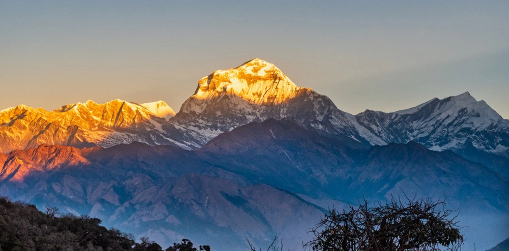
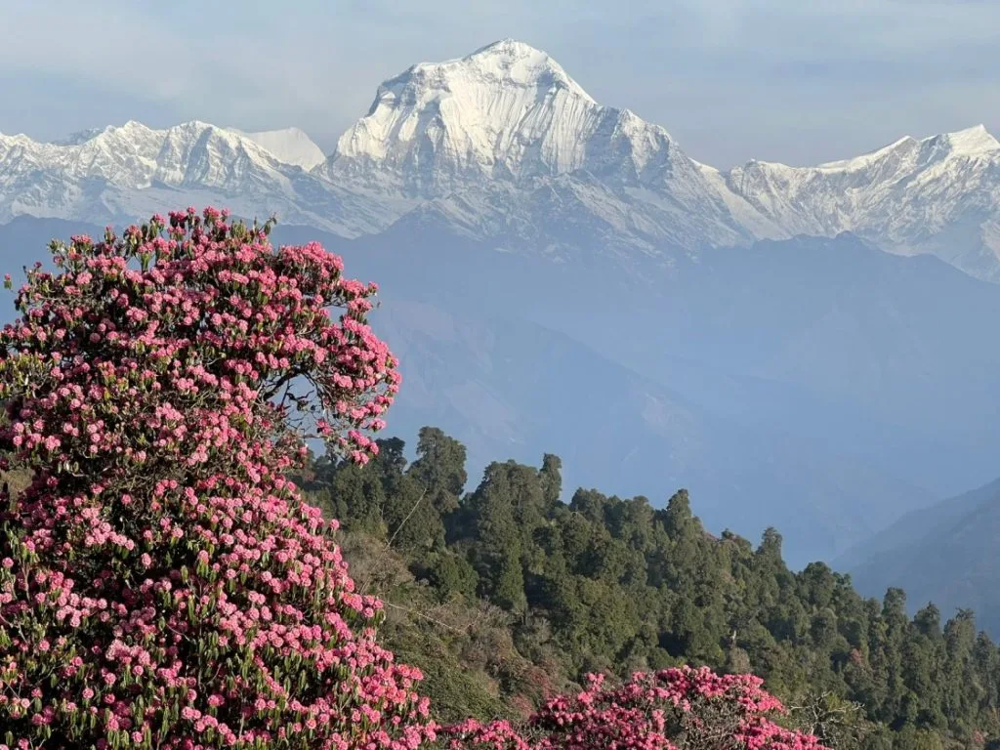
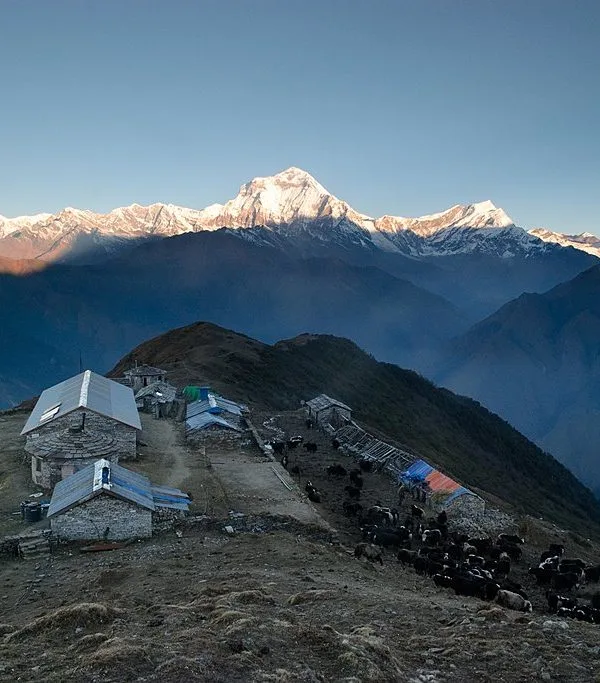
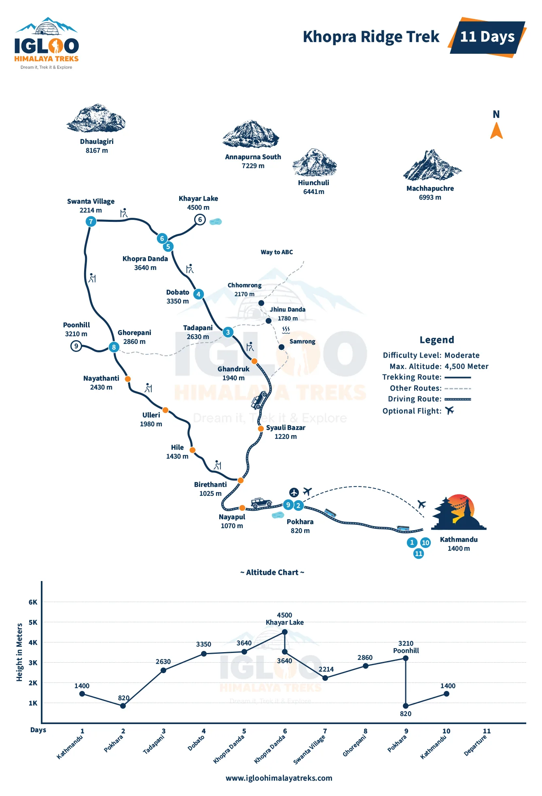
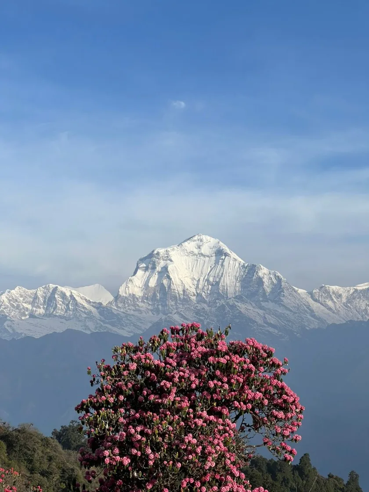
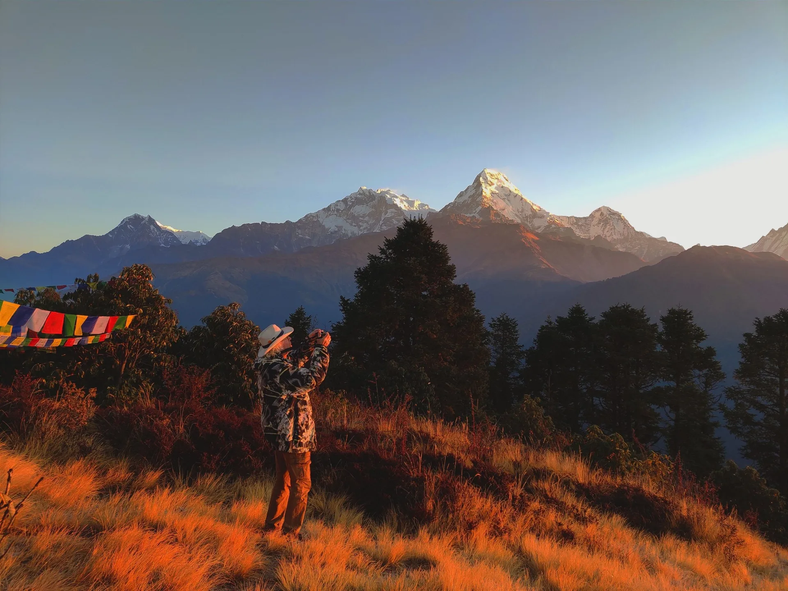
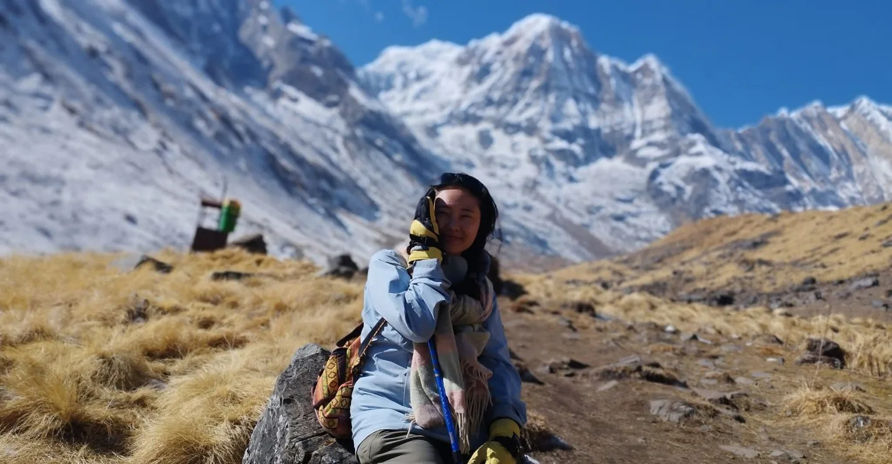
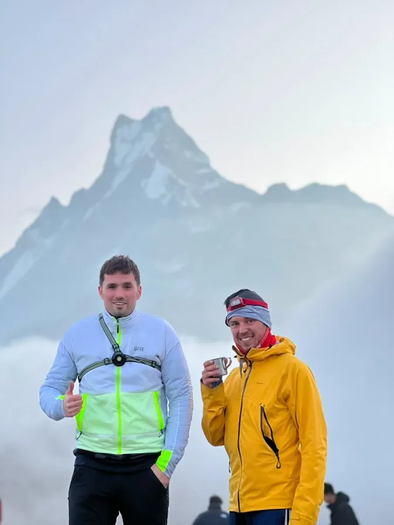

Escaping the crowded trails of Ghorepani for the serene wilderness of Dobato and Khopra Ridge was the best decision we made. Standing at 3,660m with unobstructed panoramas of Dhaulagiri (8,167m) and Annapurna South right outside our community lodge window was simply breathtaking. The high alpine excursion towards sacred Khayar Lake (4,660m) was challenging yet exhilarating. Sagar Gurung and our porter team took extraordinary care of our pacing, hydration, and safety every single step of the way.
Annapurna Region • 11 Days Forest & Ridge Trek
5.0
●●●●●
50+ on TripAdvisor
5.0
169 reviews on Google
Khopra Ridge Trek — 11 Days
Walk through the forests above Ghandruk to Khopra Ridge on our eleven-day trek in the Annapurna region. Tadapani and Dobato lead towards the ridge, where clear weather opens views of Dhaulagiri, Annapurna South and Nilgiri.

Travelers' Choice
Best of the Best 2026




Key Trip Facts
Duration
11 Days
11 days, including arrival, departure, travel, six walking stages and a lake excursion day
Difficulty
Moderate to Demanding
Moderate ridge trek; the long Khayar Lake hike is more demanding, with rocky ground and higher altitude
Maximum Altitude
4,660 m / 15,288 ft
Approximately 4,660 m if Khayar Lake is reached; highest overnight stop: Khopra Ridge, around 3,660 m
Destination
Nepal
Annapurna Conservation Area (ACAP)
Activity
Trekking
Alpine ridge walking, forest trails & lake excursion
Accommodation
Hotels (4N) & Lodges (6N)
Two nights each in Kathmandu and Pokhara 3-star hotels; six nights in local teahouses and community lodges
Transport
Private Transfers & Road/Flight
Private ground transfers; agreed drive or flight to Pokhara on Day 2; road return to Kathmandu on Day 10
Meals
City B'fasts + All Trek Meals
City hotel breakfasts; three meals during trekking; Kathmandu farewell dinner; confirm Day 9 Pokhara dinner
Recommended Season
Spring & Autumn
Spring (March–May) and autumn (September–November)
Trek Starts
Ghandruk (1,940 m)
Ghandruk, after the drive from Pokhara
Trek Ends
Birethanti (1,025 m)
Birethanti, followed by a drive to Pokhara
Trek Region
Annapurna
Annapurna Himalayas (Khopra, Khayar Lake & Poon Hill)
Package Start Point
Kathmandu
Kathmandu (Airport arrival transfer & briefing)
Package End Point
Kathmandu
Kathmandu (Farewell dinner & airport departure)
Khopra Ridge Trek Overview
Our eleven-day Khopra Ridge Trek follows forest trails from Ghandruk through Tadapani and Dobato to a ridge at around 3,660 m. The programme combines two nights at Khopra with a planned Khayar Lake excursion and a return through Swanta and Ghorepani. A Poon Hill sunrise begins the final trekking day before the descent towards Birethanti.
After travelling from Kathmandu to Pokhara, you drive to Ghandruk, a Gurung village above the Modi valley. The trail climbs through rhododendron and oak forest towards Tadapani, where you spend the first mountain night. From there, you continue towards Dobato as the air becomes cooler and the forest opens in places. These stages involve sustained climbs and uneven ground, with mountain views between the trees in clear weather.
Beyond Dobato, the route continues through higher pasture and ridge country towards Khopra Danda. At around 3,660 m, the lodge stands above the valleys, with Dhaulagiri, Annapurna South and Nilgiri visible when skies clear. You stay for two nights, using the intervening day for the hike to Khayar Lake when conditions and your health allow.
Khayar Lake is around 4,660 m, higher than the ridge lodge. The return hike involves a long climb and descent on rocky paths, so it requires more effort than the ridge route. Your guide considers weather, trail conditions and how you feel before proceeding. After the second Khopra night, descend towards Swanta, then climb through forests and farmland to Ghorepani.
The final trekking morning begins with Poon Hill sunrise before the descent to Birethanti. Ten nights, travel and departure complete the eleven-day programme, beginning and ending in Kathmandu.
Khopra Ridge Trek Highlights
Why Book the Khopra Ridge Trek with Igloo Himalaya Treks?
We help you prepare in Kathmandu and support the forest and ridge trek through these arrangements, equipment and staff services.
Trek Briefing and Gear Check
Before departure, we discuss the route, equipment and transport. Your briefing gives you time to ask about lodge facilities, the ridge ascent and Khayar Lake before travelling towards Pokhara.
Guide and Porter Support
Your package includes a professional English-speaking guide and one insured porter for every two trekkers. The guide leads the route and discusses daily conditions, while your porter carries the trekking luggage.
Equipment Provided for the Trek
We provide a sleeping bag, down jacket and duffel bag for use during the trek. Return all three afterwards. Bring your own boots, clothing and other personal essentials for the journey.
Communication When Plans Change
Weather, trail and road conditions can affect the programme, particularly the lake hike. Our team explains options and discusses changes, with additional accommodation or transport costs clarified when services exceed your quotation.
Day 1: Arrival in Kathmandu
Tribhuvan International Airport, Kathmandu – 1,400 m / 4,593 ft – Arrival & Trip Briefing
Welcome to Nepal. Our representative meets you at Tribhuvan International Airport and transfers you to your hotel in Kathmandu. After checking in, we discuss the route, equipment and walking schedule so you can prepare for the journey.
Depending on your arrival time, you can walk around Thamel or rest after your flight. Use the time to organise your belongings and discuss any equipment, health or dietary questions before departure.
Day 2: Drive or Fly from Kathmandu to Pokhara
Scenic Drive or Flight – 827 m / 2,713 ft – Phewa Lake Lakeside
After breakfast, travel to Pokhara by the flight or road option agreed in your quotation. The road follows river valleys and hillsides, while a domestic flight offers a shorter journey.
The flight takes around 25 minutes; road travel generally takes six to seven hours, depending on conditions. Keep medicines and travel essentials in your daypack. After reaching Pokhara, check into your hotel and rest. If time allows, walk beside Phewa Lake or explore Lakeside before tomorrow’s drive to Ghandruk and the first forest walking stage.
Day 3: Drive to Ghandruk and Trek to Tadapani
Pokhara Drive & Forest Hike – 2,630 m / 8,628 ft – 4–5 hrs Hike
We drive from Pokhara to Ghandruk, where the walking begins. Follow the uphill trail through rhododendron and oak forest towards Tadapani, your first overnight stop on the route.
Ghandruk’s stone houses and cultivated hillsides mark the start of the walking journey. As you climb, the trail passes through woodland, with steps and uneven sections along the way. Take a comfortable pace and keep water accessible. At Tadapani, settle into your lodge and rest before tomorrow’s ascent towards Dobato. Mountain views depend on cloud cover.
Day 4: Trek from Tadapani to Dobato
Rhododendron & Ridge Ascent – 3,350 m / 10,990 ft – 5–6 hrs Walk
Leaving Tadapani, we continue uphill through forest towards Dobato. Rhododendron and oak trees line the route, while openings in the canopy reveal views of the surrounding hills and mountains in clear weather.
Dobato is around 3,350 m, noticeably higher than Tadapani. Walk steadily and tell your guide if you feel the change in altitude. Settle into the lodge, keep warm layers accessible for the cooler evening and rest after the climb.
Day 5: Trek from Dobato to Khopra Ridge
Alpine Pastures & Ridge Trail – 3,660 m / 12,008 ft – 5–6 hrs Walk
Today we leave Dobato and continue towards Khopra Ridge. Forest and pasture give way to ridge country, with views opening towards Dhaulagiri, Annapurna South and Nilgiri when clouds clear.
Khopra Ridge, around 3,660 m, is the highest overnight stop of the itinerary. Settle into the community lodge and rest after the walk. We stay here for two nights, with tomorrow set aside for the planned Khayar Lake return hike.
Day 6: Hike to Khayar Lake and Return to Khopra Ridge
High-Altitude Sacred Alpine Lake Excursion – 4,660 m / 15,288 ft – 7–8+ hrs Return
We make an early start for the planned Khayar Lake hike, subject to weather, trail conditions and how you feel. The trail climbs along the ridge and rocky slopes towards the lake, with the mountains close above the route in clear conditions.
Khayar Lake lies around 4,660 m and is sacred to local pilgrims. The climb and return descent are demanding and take most of the day, so follow your guide’s advice on pacing, weather and safety.
After the lake visit, return to Khopra Ridge for the night. If the hike is unsuitable on the day, stay around the ridge and enjoy views across the valleys.
Day 7: Trek from Khopra Ridge to Swanta
Alpine Ridge Descent to Magar Farmland Village – 2,214 m / 7,264 ft – 5–6 hrs Walk
After two nights at Khopra Ridge, we begin the descent towards Swanta. The trail drops through alpine pastures and forest, with views across the hillside before reaching cultivated terraces.
Swanta is a Magar village at around 2,214 m, with fields and homes below the ridge. Check into your lodge and rest after the descent.
Day 8: Trek from Swanta to Ghorepani
Woodland & Village Ascent – 2,850 m / 9,350 ft – 5–6 hrs Hike
We leave Swanta and climb towards Ghorepani through farmland and forest. The route joins the main trekking trail, where more lodges and teahouses appear along the way.
Ghorepani sits around 2,850 m and is the overnight base for tomorrow’s Poon Hill sunrise hike. Settle into your lodge, organise warm clothing for tomorrow’s early walk and rest.
Day 9: Poon Hill Sunrise, Trek to Birethanti and Drive to Pokhara
Poon Hill Sunrise (3,210 m) & Descent – 827 m / 2,713 ft – Long Walk & Drive
Before dawn, we hike from Ghorepani to Poon Hill for sunrise. When skies are clear, the viewpoint looks towards Dhaulagiri and the Annapurna mountains, with changing morning light across the peaks.
After the viewpoint visit, return towards Ghorepani before following the descent through Ulleri and Hile to Birethanti. This is a long final walking day with many downhill steps, so keep a steady pace. At Birethanti, meet the private vehicle for the drive to Pokhara, where you spend another hotel night.
Day 10: Drive from Pokhara to Kathmandu
Overland Scenic Drive – 1,400 m / 4,593 ft – Farewell Dinner
After breakfast, return to Kathmandu by road as scheduled. The journey follows river valleys and hillsides, with travel time affected by traffic, roadworks and conditions along the route.
On arrival, check into your hotel and organise your belongings for tomorrow’s departure. Depending on the journey, you can rest or walk around Thamel. A farewell dinner in Kathmandu is included; confirm the arrangements with us before the evening.
Day 11: Farewell by Igloo Himalaya Treks
Kathmandu Valley – 1,400 m / 4,593 ft – Airport Departure
Your eleven-day Khopra Ridge Trek ends today. After breakfast, check your belongings and prepare for departure. Depending on your flight time, you may have time for a walk nearby before your transfer to the airport.
Our representative transfers you to Tribhuvan International Airport for your departure.
What’s Included in the Khopra Ridge Trek
Airport transfers
Private pickup and drop-off in Kathmandu for arrival and departure.
Transport
Private ground transfers and the agreed Kathmandu–Pokhara travel option, followed by the scheduled road return to Kathmandu afterwards.
Accommodation
Two nights each in Kathmandu and Pokhara 3-star hotels with breakfast, plus six nights in local teahouses and community lodges along the confirmed trekking route.
Meals
Hotel breakfasts; three meals during trekking, with a cup of tea or coffee at each meal, seasonal fruit and a Snickers bar with dinner, plus a Kathmandu farewell dinner.
Guide and porter
A professional English-speaking guide, with one insured porter for every two trekkers.
Permits
The Annapurna Conservation Area Permit is included; confirm any additional required documentation and its cost before departure.
Trekking equipment
Complimentary use of a sleeping bag, down jacket and duffel bag, with all three returned after completing the trek.
First-aid supplies
A basic first-aid kit available throughout the mountain trekking programme.
Staff welfare
Team insurance, fair salaries and necessary trekking equipment included.
Trip extras
A detailed trekking map and achievement certificate provided for your completed trek.
What’s Not Included in the Khopra Ridge Trek
International flights and Nepal visa
Airfare to and from Nepal and your visa fee.
Travel insurance
Your policy, including medical treatment and evacuation cover suitable for the full planned route.
Personal equipment
Boots, clothing, toiletries and electronics, plus other personal items beyond the included loaned gear.
Extra food and drinks
Bottled water, soft drinks, alcohol, personal snacks and beverages beyond the confirmed trekking meal allowance.
Other city meals
Lunches and dinners in Kathmandu and Pokhara outside the included farewell dinner and any specifically confirmed allowances.
Personal services
Laundry, internet access, phone charges, showers and device charging where fees apply.
Tips
Voluntary gratuities for your guide, porter and drivers.
Optional sightseeing
Tours, tickets and excursions outside this itinerary.
Additional services
Extra accommodation, meals or transport required outside the agreed itinerary because of delays, personal changes or other circumstances.
Khopra Ridge Trek Dates & Availability
Group Departures: If you would like to trek with other travellers, ask us about upcoming group departures. We’ll confirm the available dates, spaces and price for your chosen departure.
Private Trek Dates: Prefer to travel with your own group? Send us your preferred arrival date and number of travellers. We’ll check the arrangements for a private trek.
Starting Prices by Group Size
Prices are per-person starting rates in US dollars with full service inclusions, private transfers, and experienced local guides:
1 person
From USD 1,015
Private Support
2–4 people
From USD 965
Small Group
5–9 people (Best Value)
From USD 925
Best Value
10–20 people
Request a quote
Group Tier
Other group sizes
Request a quote
Custom Quote
| Group Size | Starting Price per Person |
|---|---|
| 1 person | From USD 1,015 |
| 2–4 people | From USD 965 |
| 5–9 people (Best Value) | From USD 925 |
| 10–20 people | Request a quote |
| Other group sizes | Request a quote |
Prices are per-person starting rates in US dollars. Your quotation confirms availability, room arrangements, Day 2 transport and the Khayar Lake excursion for your departure.
06
SEP
Sep 6 – Sep 16, 2026
AVAILABLE$925 pp
18
SEP
Sep 18 – Sep 28, 2026
AVAILABLE$925 pp
25
SEP
Sep 25 – Oct 5, 2026
AVAILABLE$925 pp
Ask us about your preferred dates.
Instant response within 2–4 hours from our Kathmandu operations desk.
What to Pack for the Khopra Ridge Trek
Pack layers for warmer forest walks, cold ridge nights and the higher Khayar Lake excursion. Keep water, warm clothing, rain protection, medicines and valuables in your daypack. We provide loaned trekking equipment; confirm its suitability and your porter’s allowance.
Hiking Gear
Footwear, technical trekking poles, daypack and trail protection
Category Tip: The stone stair trails between Ulleri and Ghorepani and the steep ridge climb to Khopra benefit greatly from sturdy trekking poles and well-broken-in boots.
Clothing
Moisture-wicking base layers, insulating fleece, waterproof shells and accessories
Included Equipment: We provide a down jacket for use during the trek; return it afterwards.
Category Tip: Temperatures drop below freezing at Khopra Ridge (3,660 m) and Khayar Lake (4,660 m); thermal base layers and a warm insulating jacket are essential for early mornings.
Sleeping Equipment
Warm sleeping insulation for cold alpine nights
Category Tip: High-altitude community lodges provide basic blankets, but our complimentary 4-season sleeping bag ensures warmth during cold ridge nights.
Toiletries & Hygiene
Biodegradable soap, skin protection, personal medicine and hygiene essentials
Category Tip: Water sources freeze at high elevations; pack biodegradable wet wipes, high-SPF lip balm, and hand sanitizer.
Electronics
Headlamp, power backup, photography and charging accessories
Category Tip: Sub-zero night temperatures drain lithium batteries quickly; carry high-capacity power banks inside your sleeping bag at night.
Documents & Personal Items
Official permits, travel insurance, cash in NPR and protective pouches
Category Tip: Keep your ACAP permit, TIMS card, cash in NPR, and passport copies sealed in waterproof ziplock bags inside your daypack.
Sherpa Porter Luggage Allowance & Daypack Advice
We provide a duffel bag and trekking map. Return the duffel bag after trekking. Keep valuables in your daypack and confirm the porter’s baggage allowance before departure. Your guide and porter support ensures luggage is safely transported between lodges while you carry your personal daypack.
Read Before You Book, Khopra Ridge Trek
Before booking your Khopra Ridge Trek, consider the walking days, ridge accommodation and demanding Khayar Lake excursion. These details help you prepare and decide whether the itinerary suits your experience and plans.
If you have any questions or need advice on preparation, feel free to email or WhatsApp us directly. We will get back to you within 24 hours to answer any more questions.
Trek Difficulty and Fitness
The main trek is moderate, with six walking stages through forests, villages and ridge country. The Khayar Lake excursion adds a more demanding day, climbing to around 4,660 m before returning. Expect long uphill sections, uneven paths and substantial descents, including the final walk from Ghorepani.
Previous hiking experience is helpful. First-time trekkers should build endurance before departure and become comfortable walking uphill and downhill regularly with a daypack.
Begin preparing around two to three months beforehand, allowing longer if you are starting from a low fitness level. Gradually combine regular walks, hill hikes and strength exercises. Practise in the boots you will wear on the trek.
Altitude and Acclimatisation
The itinerary has no dedicated acclimatisation day. You climb from Tadapani through Dobato to Khopra Ridge, with two nights there. The lake excursion adds substantial altitude and physical effort.
Tell your guide about headaches, nausea, dizziness or unusual fatigue. Do not continue higher while experiencing symptoms of altitude illness. If symptoms worsen despite rest at the same elevation, descend. The lake excursion is optional, and the decision should reflect your health, weather and trail conditions.
Medical Conditions and Travel Insurance
If you have an existing medical condition, seek advice from a healthcare professional familiar with high-altitude travel before booking. Discuss the planned route and any medicines you take.
Travel insurance is strongly recommended and excluded from the package. Choose cover for trekking to approximately 4,660 metres, medical treatment and emergency evacuation in Nepal. Check exclusions, excess charges and the insurer’s assistance procedure. Carry policy details and emergency contacts throughout the journey.
Accommodation and Room Facilities
You stay in 3-star hotels in Kathmandu and Pokhara for two nights each, with six mountain nights in local teahouses and community lodges. Two consecutive nights are spent at Khopra Ridge.
Most mountain rooms have twin beds, mattresses, pillows and blankets, with shared bathrooms. Facilities become simpler around the higher ridge. Ask about room arrangements before departure and keep warm layers accessible for cold lodge evenings and mornings.
Food and Dietary Requirements
Lodge meals include dal bhat, noodles, soups and vegetable dishes. Trekking meals include tea or coffee, with fruit and Snickers at dinner.
Tell us about allergies or dietary requirements before booking so we can discuss what can be arranged along the route. Explain strict requirements clearly, including any concerns about shared cooking equipment.
Drinking Water
Carry reusable bottles and drink boiled or appropriately treated water. Stream water and untreated tap water may still contain germs that cause illness.
Boiling is the most reliable way to kill germs. If boiling is unavailable, filtration followed by disinfection offers broader protection than many portable filters alone. Follow the instructions for your water-treatment equipment or tablets.
Guide and Porter Support
A professional English-speaking guide and one porter for every two trekkers are included. Team insurance, fair salaries and necessary equipment are covered. Confirm the baggage allowance and any solo porter arrangement before packing.
Showers, Charging and Communication
Hot showers, Wi-Fi and device charging may cost extra, with availability varying between lodges. Electricity and communication can be less reliable at Khopra Ridge. Carry a charged power bank and tell family that contact may be limited. Ask your guide about available services at each stop.
Permits and Documents
ACAP is included. The Khopra route also requires an agency-issued TIMS card and licensed guide under the tourism board’s listed provisions. Confirm TIMS arrangements and costs before departure. Carry your passport, insurance details and permit copies.
Travel Delays and Extra Time
Rain, landslides and roadworks can affect the transfers. Snow, wind and visibility can affect the lake hike, so allow flexibility around walking and travel.
Allow extra time before your international departure. Additional accommodation, meals or transport can cost extra when delays or changes require services outside the programme.
Altitude Profile of the Khopra Ridge Trek
The route climbs from Ghandruk through Tadapani and Dobato to Khopra Ridge, where you spend two nights. Khayar Lake is higher than the overnight lodge and involves a return day hike. You then descend to Swanta, climb towards Ghorepani and visit Poon Hill before leaving.
Interactive elevation map showing daily gain and acclimatisation stopping points. Switch units below to convert between metres (m) and feet (ft).
Overnight Altitudes
Elevation BreakdownElevations are approximate and follow the overnight stops in our itinerary.
Higher Places You Visit
Day excursions, high ridge lodges and panoramic viewpoints reaching higher elevations along the trail
Day 4 • Ridge Ascent Stage
3,350 m
Day 4 — Dobato:
Around 3,350 m, an overnight stop above Tadapani before continuing towards Khopra.
Day 5 • Highest Planned Sleep
3,660 m
Day 5 — Khopra Ridge:
Around 3,660 m, the highest overnight stop, with two nights planned here.
Day 6 • High Mountain Excursion
4,660 m
Day 6 — Khayar Lake:
Approximately 4,660 m if reached, before returning to sleep at Khopra Ridge.
Day 9 • Panoramic Sunrise Viewpoint
3,210 m
Day 9 — Poon Hill:
Around 3,210 m, for sunrise before descending towards Birethanti and Pokhara.
Acclimatisation & Trail Excursion Note: The lake hike does not involve a higher overnight stay. You return to the ridge lodge, while weather, trail conditions and health govern the excursion.
Weather and Best Time for the Khopra Ridge Trek
Spring, from March to May, and autumn, from September to November, are generally the best seasons for the Khopra Ridge Trek. Both offer opportunities for mountain views and favourable walking conditions, although cold, wind, rain and snowfall remain possible around the ridge and lake.
Find out the temperature ranges you will experience along the trail. Toggle between daily variation and monthly averages, and switch units below to convert between Celsius (°C) and Fahrenheit (°F).
Seasonal Weather Conditions
Year-Round Climate PatternsThese are seasonal patterns; conditions can vary from year to year and during an individual trek.
How Weather Changes Along the Route
Elevation gradients & trail exposureForest walks can feel warmer in sunshine, while Dobato and Khopra are colder after sunset. The Khayar Lake route is higher and more exposed, with wind adding to the cold.
Even during spring and autumn, the ridge can feel cold before dawn. Snow and ice may remain on the lake trail, particularly early in spring. Carry warm layers and weather protection, and check conditions before attempting the longer excursion.
Carry warm layers, windproof outerwear, and reliable weather protection accessible in your daypack throughout the route.
Which Season Should You Choose?
Optimal timing for trek prioritiesChoose spring for warming days and possible rhododendron flowers in the forests. Choose autumn, especially October or November, if mountain visibility is your priority.
Winter needs checks for snow, while monsoon departures require flexibility around wet trails and road delays.
Contact our mountain team to check real-time trail conditions, ridge lodge openings, and lake snow levels for your preferred travel window.
Khopra Ridge Trek Route Map
Detailed topographic route map covering the complete Khopra Ridge trail from Pokhara and Ghandruk, through Tadapani and Dobato, the high ridge ascent to Khopra (3,660 m), the alpine excursion to sacred Khayar Lake (4,660 m), and the scenic return via Swanta, Ghorepani, and Poon Hill.
Best Himalayan Trekking Reviews
4.9 / 5
(128+ Reviews)
Over 15,000 adventure seekers have explored Khopra Ridge, Poon Hill, Annapurna, and the high Himalayas with Igloo Himalaya Treks.

25 October

18 October

12 October

05 October


Khopra Ridge Trek FAQs
Find clear answers regarding trail difficulty, the Khayar Lake excursion, baggage allowances, altitude safety, and travel planning for your 11-day journey.
Route & Khayar Lake
Can I do this trek without previous trekking experience?
Yes, with suitable fitness and preparation. The route includes sustained climbs, uneven paths and long descents. Practise hill walks with a daypack before departure. The Khayar Lake excursion is demanding and depends on conditions and how you feel.
Does this route include sunrise at Poon Hill?
Yes. We stay in Ghorepani on Day 8 and hike to Poon Hill the next morning for sunrise, weather permitting. Afterwards, descend through Ulleri and Hile to Birethanti before driving to Pokhara for another hotel night.
Do we sleep overnight at Khayar Lake?
No. Khayar Lake is a daytime excursion from Khopra Ridge, with the return planned for the same day. We spend two nights at the ridge lodge. The lake visit depends on weather, trail conditions and your health during trekking.
How does this trek differ from Poon Hill trekking?
This itinerary adds the Khopra Ridge section and a planned Khayar Lake excursion before finishing through Ghorepani and Poon Hill. A standalone Poon Hill trek focuses on forest and village trails. Choose according to your time, fitness and altitude preferences.
What is the highest altitude on this itinerary?
The Khayar Lake hike reaches approximately 4,660 metres if completed. Khopra Ridge, around 3,660 metres, is the highest overnight stop. You return to the ridge lodge after the excursion, rather than staying overnight at the lake.
Is the Khayar Lake hike compulsory?
No. The lake hike is planned for Day 6 but remains optional. Your guide considers weather, trail conditions and how you feel. Discuss suitable alternatives at the ridge if the excursion cannot go ahead safely.
Does being fit protect me from altitude sickness?
No. Good fitness helps with the demands, but it does not prevent altitude illness. Fit and experienced trekkers can also become unwell. Follow your guide’s advice and report symptoms instead of assuming fitness will protect you at altitude.
What should I do if I feel unwell at altitude?
Tell your guide about headaches, nausea, dizziness or unusual fatigue. Do not ascend while experiencing symptoms of altitude illness. If symptoms worsen despite rest at the same elevation, descent is necessary. Skip the lake hike when unwell.
Do I need to carry my main trekking bag?
A porter carries your main bag, with one porter for every two trekkers. Confirm the baggage allowance before packing. You carry a daypack with water, warm layers, medicines, valuables and essentials for the walking day.
Do I need to bring a sleeping bag and down jacket?
We provide a sleeping bag, down jacket and duffel bag for use during the trek. Return all three afterwards. Bring your own boots, clothing and personal essentials. Confirm the equipment’s warmth and suitability for your departure season.
Can I book as a solo traveller?
Yes. The solo starting price is from USD 1,015 per person. Send us your dates so we can confirm availability and your quotation, including the room arrangement, porter allocation and any supplement for your departure.
Is insurance covering trekking to 4,000 metres sufficient?
That limit does not cover the Khayar Lake excursion, which reaches approximately 4,660 metres. Choose insurance covering the full route, trekking activity, medical treatment and emergency evacuation in Nepal. Check exclusions and the insurer’s assistance procedure before departure.
MORE ADVENTURES
You Might Also Like
If you prefer a lower ridge, a shorter mountain route or an Annapurna base camp journey, consider other trekking packages. Enquire about your preferred package for current prices and availability.

9 DaysMohare Danda Trek — 9 Days
Walk through Banskharka and Nangi to Mohare Danda, staying in community accommodation before descending through Tikot. This route suits travellers interested in village stays and a lower ridge viewpoint, with forest paths and sunrise views.
 10 Days
10 Days
Ghorepani Poon Hill Trek — 10 Days
Follow the Ghorepani forest trail and visit Poon Hill for sunrise before continuing through Tadapani and Ghandruk. This route suits travellers interested in those villages, without adding Khopra Ridge or Khayar Lake.

13 DaysAnnapurna Base Camp Trek Via Poon Hill — 13 Days
Walk through Ghorepani for Poon Hill sunrise, then continue through Tadapani and Chhomrong towards Annapurna Base Camp. The return follows Bamboo and Jhinu Danda. Choose this route for the Annapurna Sanctuary journey and an overnight at base camp.

9 DaysMardi Himal Trek — 9 Days
Climb through Forest Camp towards High Camp and the Mardi Himal upper viewpoint, with Machhapuchhre close above the ridge in clear weather. This route suits travellers interested in higher mountain walking along a different ridge within Annapurna.